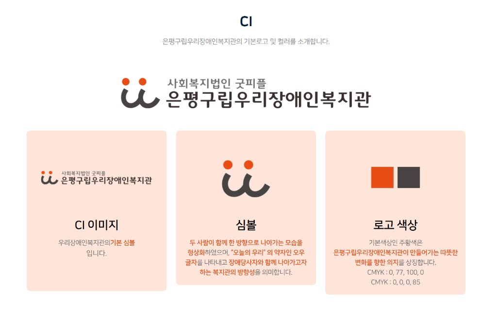

1. 프로젝트 개요
| 항목 | 내용 |
|---|
| 단체명 | 우리챔버오케스트라 (Woori Chamber Orchestra) |
| 소속 | 은평구립우리장애인복지관 · 문화연계형 복지일자리 |
| 사이트 형태 | 독립 홈페이지 (복지관 사이트 링크 연결) |
| 1차 목적 | 소개 |
| 1차 메뉴 | 홈 · 소개 · 단원 · 문의 |
2. 복지관 CI 색상 (공식)

심볼: 오렌지 두 점 + 그레이 곡선 (「오」「우」)
오렌지
#E85A24 · CMYK 0,77,100,0
다크 그레이
#262626 · CMYK 0,0,0,85
3. Ⅰ부 색감 3안
공통: CI 오렌지·그레이·피치 사용. 블루·베이지 톤 사용 안 함.
| 안 | 특징 | 복지관 연속성 | 오케스트라 품위 | 추천 |
| A. CI 동행 라이트 |
피치 배경 + 오렌지 버튼. 복지관 사이트와 가장 자연스러움 |
매우 높음 | 보통 | |
| B. 무대와 동행 |
히어로만 다크 그레이, 본문은 CI 톤. 공연 사진 투입 유연 |
높음 | 높음 |
추천 |
| C. 무대 다크 |
전면 다크 + 오렌지 포인트. 품위 강하나 복지관과 다소 독립적 |
보통 | 매우 높음 | |
Ⅰ부 1차 추천: B안 — 복지관 CI를 유지하면서 공연 사진이 준비되면 히어로에 자연스럽게 반영 가능.
4. Ⅰ부 카피 톤
| 지양 | 권장 |
|---|
| 불우한 장애인을 돕습니다 | 음악으로 지역사회와 소통합니다 |
| 특별한 아이들의 꿈 | 발달장애 예술가로 성장하는 연주자들 |
| 따뜻한 마음을 나눠주세요 | 우리의 무대를 함께 응원해 주세요 |
미션 초안: 「음악으로 세상과 만나는, 우리챔버오케스트라」
5. 벤치마크 사이트 분석
| 사이트 | 유형 | 가져올 점 | 가져오지 않을 점 |
|---|
| 하트하트오케스트라 | 최근접 모델 |
소개·단원·공연·소식 IA, 연주자 중심 톤 |
재단·아카데미·콩쿨까지 한 사이트 규모 |
| 드림위드앙상블 | 실무형 연주단체 |
월별 공연 일정, 영상 아카이브, 후원 안내 |
게시판형 오래된 UI |
| 아트위캔 | 현대적 단체 |
히어로 영상, 최근 공연 카드, 앙상블 소개 |
교육·카페·일자리까지 한 번에 |
| 뷰티플마인드 | 신뢰 구축 |
인사말, 숫자 연혁, 소식지·보도 |
외교·해외 네트워크 중심 포지션 |
| 경기리베라오케스트라 | 단원 프로필 |
악기·약력·한 줄 소개 단원 카드 |
공연장 산하 페이지 톤 |
| 하트하트아트앤컬처 | 브랜드 톤 |
사진·여백, 아티스트 동등 대우 |
미술·굿즈 복합 브랜드 |
| 신한 SOL레미오 | 스토리 참고 |
직업 연주자·고용 모델 내러티브 |
기업 인트라넷 구조 |
Ⅱ부 핵심: 「복지 기관 소개」가 아니라 「전문 연주 단체 + 자립 + 인식 개선」을 동시에 보여주는 사이트.
6. Ⅱ부 공통 설계 원칙
메시지
단원은 학습자가 아니라 연주자. 공연은 사회공헌 이벤트가 아니라 본업. 동정이 아닌 품위.
구조 (벤치마크 공통 5모듈)
소개 · 사람과 악기 · 공연 · 소식 · 함께하기(문의)
시각
공연 사진이 주인공. 여백 넉넉. 카드 2~3열. 과한 장식·자동재생 지양.
접근성
WCAG 2.2 AA. 충분한 대비, 대체 텍스트, 키보드 탐색, 자막.
7. Ⅱ부 색감 3안 (벤치마크 기준)
복지관 CI 색상과 무관. 벤치마크 사이트 톤에서 추출한 독립 팔레트.
| 안 | 레퍼런스 | 색감 | 특징 | 추천 |
| D. 무대 품위 |
하트하트·아트위캔 |
다크 네이비 #1A2433 + 골드 #C8943A |
무대 중심, 품위 최대. 사진·영상 히어로 |
추천 |
| E. 현대 라이트 |
아트위캔·뷰티플마인드 |
화이트 + 딥 블루 #2E6DB4 + 웜 그레이 |
밝고 현대적. 카드형 공연 목록에 적합 |
|
| F. 아카이브 |
드림위드·경기리베라 |
오프화이트 #F7F6F3 + 차콜 + 테라코타 |
실용적. 일정·단원 카드·보도 아카이브 중심 |
|
Ⅱ부 팔레트 비교
D. 무대 품위
네이비 #1A2433
골드 #C8943A
라이트 #F2F2F2
E. 현대 라이트
블루 #2E6DB4
화이트 #FFFFFF
그레이 #5A5A5A
F. 아카이브
오프화이트 #F7F6F3
차콜 #3D3D3D
테라코타 #C4622D
Ⅱ부 1차 추천: D안 (무대 품위) — 하트하트오케스트라에 가장 가깝고, 공연 사진·영상 투입 시 가장 자연스러움.
8. Ⅱ부 정보구조 (벤치마크 기준)
| 메뉴 | 벤치마크 근거 | 1차 |
|---|
| 홈 | 하트하트·아트위캔 히어로 | 공연 사진/영상, 미션, 다음 공연, 하이라이트 |
| 소개 | 뷰티플마인드 인사말 | 오케스트라란, 복지일자리 모델, 연혁, 지휘 |
| 단원 | 경기리베라 단원 카드 | 악기군별 카드 (사진·한 줄 소개) |
| 공연 | 드림위드 일정·정기연주회 | 예정 + 지난 무대 아카이브 |
| 소식 | 하트하트 공지·보도 | 공지·언론보도·영상 링크 |
| 문의 | 공통 | 초청·취재·협력 문의 |
소개 목적 1차 론칭 시: 홈·소개·단원·문의 4개만. 공연·소식은 2차.
9. Ⅰ부 vs Ⅱ부 비교
| Ⅰ부 (복지관 CI 연계) | Ⅱ부 (벤치마크 독립) |
|---|
| 색상 기준 | 복지관 CI (오렌지·그레이·피치) | 벤치마크 톤 (네이비·골드 등) |
| 복지관 연속성 | 매우 중요 (링크 이질감 최소화) | 상·하단 소속 표기로 보완 |
| 오케스트라 품위 | 보통~높음 | 높음~매우 높음 |
| 1차 추천 | B. 무대와 동행 | D. 무대 품위 |
| 적합 상황 | 복지관 담당자·내부 검토 | 오케스트라 정체성·대외 홍보 강조 |
실무 제안: 복지관 링크 사이트이므로 Ⅰ부 B안을 기본으로 하되, 히어로·단원·공연 영역의 레이아웃·카피 톤은 Ⅱ부 벤치마크 원칙을 따르는 하이브리드가 가장 현실적입니다.
10. 의견 요청
| # | 질문 | 선택지 |
|---|
| 1 | 색감 (Ⅰ부) | A / B 추천 / C |
| 2 | 색감 (Ⅱ부 참고) | D 추천 / E / F |
| 3 | 적용 방식 | Ⅰ부만 / Ⅱ부만 / 하이브리드(Ⅰ 색상 + Ⅱ 구조) |
| 4 | 히어로 문장 | 초안 수정 또는 새 문장 |
| 5 | 공연 사진 | 있음 / 추후 제공 |